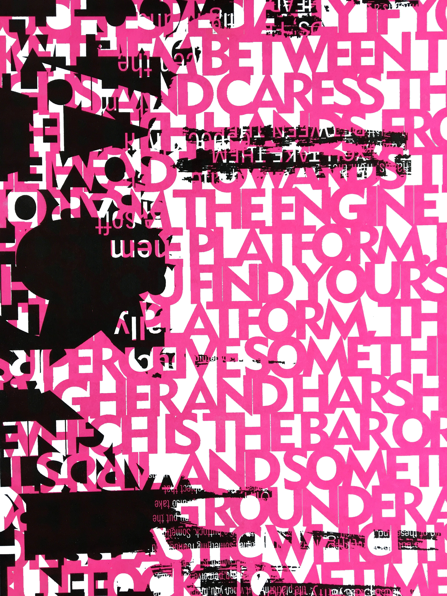
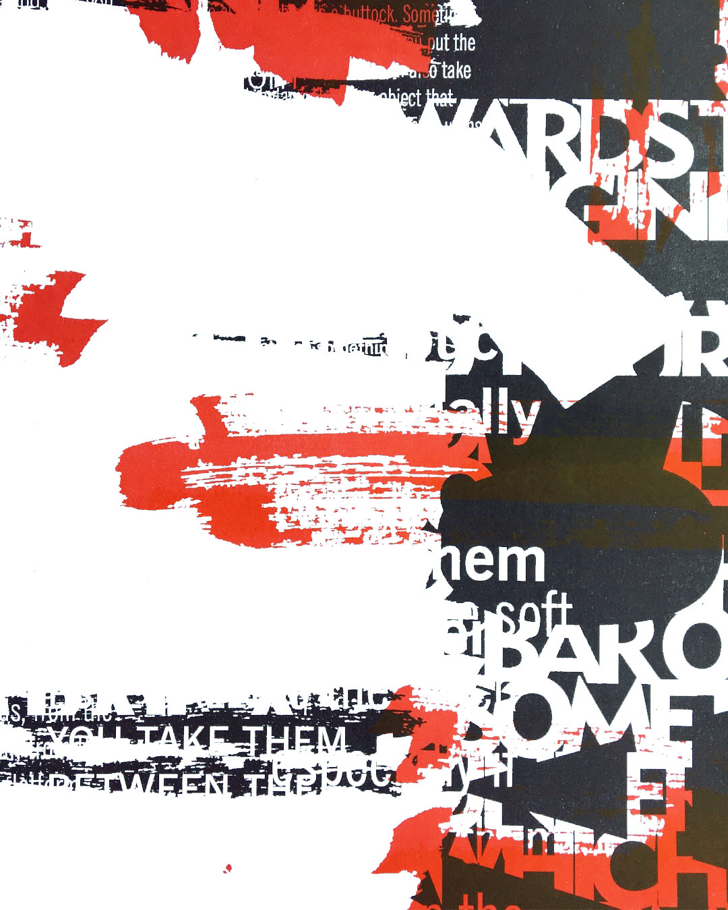

border news/type specimen
print
Type specimen designed for typeface News Gothic. Two different text sources were used to construct the specimen's content. One which includes a brief description and history of the typeface, and the other was selected by connecting the typeface's characteristics with any text of personal choice. Given the humanistic characteristics of the typeface and its common use to deliver information in a clear manner, an article from Project Censored (The News that Didn't Make the News) was selected to compliment the piece, then placed in a newspaper format.
InDesign
Typeface News Gothic by Morris Fuller Benton
News Source
www.projectcensored.org
2017

